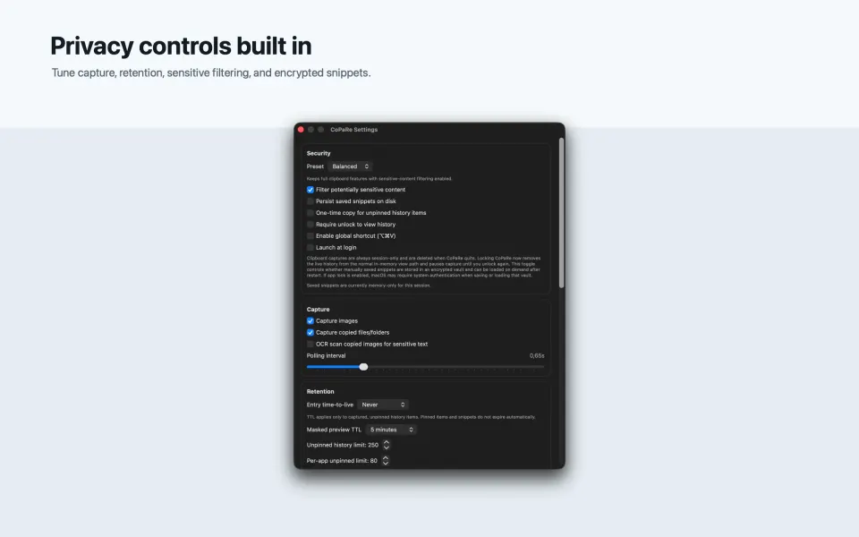

Clipboard history clears when CoPaRe quits.
Captured items stay local and are designed for short-lived access during the current session.
Private clipboard for Mac
Fast clipboard recall with session-only history, local-first privacy controls, and encrypted snippets when you choose to save them.
CoPaRe keeps copied material useful without turning the clipboard into a permanent remote data store.
Captured items stay local and are designed for short-lived access during the current session.
The app does not collect user data or send clipboard contents to a server.
Reusable snippets can be stored locally in an encrypted vault protected with Apple platform APIs.

CoPaRe introduces the core workflow before it starts handling your clipboard, then stays available from the menu bar for quick actions.